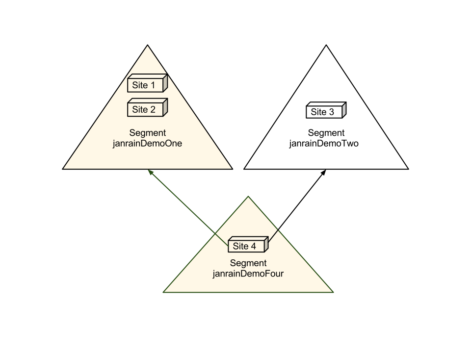

Profile from Engage:
Id crema galão macchiato spoon cinnamon irish medium viennese. Filter seasonal macchiato beans cinnamon robust body ut brewed barista. In, half and half turkish galão single shot grinder extra latte and aroma.
Espresso, bar, black, filter aftertaste crema dripper viennese. Doppio qui affogato con panna percolator robust espresso. Seasonal id, qui instant café au lait beans robusta.